Last updated: 2022-02-16
Checks: 7 0
Knit directory: scATACseq-topics/
This reproducible R Markdown analysis was created with workflowr (version 1.7.0). The Checks tab describes the reproducibility checks that were applied when the results were created. The Past versions tab lists the development history.
Great! Since the R Markdown file has been committed to the Git repository, you know the exact version of the code that produced these results.
Great job! The global environment was empty. Objects defined in the global environment can affect the analysis in your R Markdown file in unknown ways. For reproduciblity it's best to always run the code in an empty environment.
The command set.seed(20200729) was run prior to running the code in the R Markdown file. Setting a seed ensures that any results that rely on randomness, e.g. subsampling or permutations, are reproducible.
Great job! Recording the operating system, R version, and package versions is critical for reproducibility.
Nice! There were no cached chunks for this analysis, so you can be confident that you successfully produced the results during this run.
Great job! Using relative paths to the files within your workflowr project makes it easier to run your code on other machines.
Great! You are using Git for version control. Tracking code development and connecting the code version to the results is critical for reproducibility.
The results in this page were generated with repository version c1e1d7e. See the Past versions tab to see a history of the changes made to the R Markdown and HTML files.
Note that you need to be careful to ensure that all relevant files for the analysis have been committed to Git prior to generating the results (you can use wflow_publish or wflow_git_commit). workflowr only checks the R Markdown file, but you know if there are other scripts or data files that it depends on. Below is the status of the Git repository when the results were generated:
Ignored files:
Ignored: .DS_Store
Ignored: .Rhistory
Ignored: .Rproj.user/
Ignored: output/plotly/Buenrostro_2018_Chen2019pipeline/
Untracked files:
Untracked: analysis/analysis_Buenrostro2018_k10.Rmd
Untracked: analysis/clusters_Buenrostro2018_k10_Chen2019pipeline.Rmd
Untracked: analysis/process_data_Buenrostro2018_Chen2019.Rmd
Untracked: analysis/selected_figures_Buenrostro2018.Rmd
Untracked: analysis/test_structure_plots_Buenrostro2018_k11_Chen2019pipeline.Rmd
Untracked: gsea_b_cells.html
Untracked: output/clustering-Cusanovich2018.rds
Untracked: output/plotly/Cusanovich2018/gsea_topic_10_genebody-sum_files/crosstalk-1.1.1/
Untracked: output/plotly/Cusanovich2018/gsea_topic_10_genebody-sum_files/jquery-3.5.1/
Untracked: output/plotly/Cusanovich2018/gsea_topic_10_genebody-sum_files/plotly-binding-4.9.3/
Untracked: output/plotly/Cusanovich2018/gsea_topic_10_genebody-sum_files/plotly-htmlwidgets-css-1.57.1/
Untracked: output/plotly/Cusanovich2018/gsea_topic_10_genebody-sum_files/plotly-main-1.57.1/
Untracked: output/plotly/Cusanovich2018/gsea_topic_10_tss-sum_files/crosstalk-1.1.1/
Untracked: output/plotly/Cusanovich2018/gsea_topic_10_tss-sum_files/jquery-3.5.1/
Untracked: output/plotly/Cusanovich2018/gsea_topic_10_tss-sum_files/plotly-binding-4.9.3/
Untracked: output/plotly/Cusanovich2018/gsea_topic_10_tss-sum_files/plotly-htmlwidgets-css-1.57.1/
Untracked: output/plotly/Cusanovich2018/gsea_topic_10_tss-sum_files/plotly-main-1.57.1/
Untracked: output/plotly/Cusanovich2018/gsea_topic_11_genebody-sum_files/crosstalk-1.1.1/
Untracked: output/plotly/Cusanovich2018/gsea_topic_11_genebody-sum_files/jquery-3.5.1/
Untracked: output/plotly/Cusanovich2018/gsea_topic_11_genebody-sum_files/plotly-binding-4.9.3/
Untracked: output/plotly/Cusanovich2018/gsea_topic_11_genebody-sum_files/plotly-htmlwidgets-css-1.57.1/
Untracked: output/plotly/Cusanovich2018/gsea_topic_11_genebody-sum_files/plotly-main-1.57.1/
Untracked: output/plotly/Cusanovich2018/gsea_topic_11_tss-sum_files/crosstalk-1.1.1/
Untracked: output/plotly/Cusanovich2018/gsea_topic_11_tss-sum_files/jquery-3.5.1/
Untracked: output/plotly/Cusanovich2018/gsea_topic_11_tss-sum_files/plotly-binding-4.9.3/
Untracked: output/plotly/Cusanovich2018/gsea_topic_11_tss-sum_files/plotly-htmlwidgets-css-1.57.1/
Untracked: output/plotly/Cusanovich2018/gsea_topic_11_tss-sum_files/plotly-main-1.57.1/
Untracked: output/plotly/Cusanovich2018/gsea_topic_12_genebody-sum_files/crosstalk-1.1.1/
Untracked: output/plotly/Cusanovich2018/gsea_topic_12_genebody-sum_files/jquery-3.5.1/
Untracked: output/plotly/Cusanovich2018/gsea_topic_12_genebody-sum_files/plotly-binding-4.9.3/
Untracked: output/plotly/Cusanovich2018/gsea_topic_12_genebody-sum_files/plotly-htmlwidgets-css-1.57.1/
Untracked: output/plotly/Cusanovich2018/gsea_topic_12_genebody-sum_files/plotly-main-1.57.1/
Untracked: output/plotly/Cusanovich2018/gsea_topic_12_tss-sum_files/crosstalk-1.1.1/
Untracked: output/plotly/Cusanovich2018/gsea_topic_12_tss-sum_files/jquery-3.5.1/
Untracked: output/plotly/Cusanovich2018/gsea_topic_12_tss-sum_files/plotly-binding-4.9.3/
Untracked: output/plotly/Cusanovich2018/gsea_topic_12_tss-sum_files/plotly-htmlwidgets-css-1.57.1/
Untracked: output/plotly/Cusanovich2018/gsea_topic_12_tss-sum_files/plotly-main-1.57.1/
Untracked: output/plotly/Cusanovich2018/gsea_topic_13_genebody-sum_files/crosstalk-1.1.1/
Untracked: output/plotly/Cusanovich2018/gsea_topic_13_genebody-sum_files/jquery-3.5.1/
Untracked: output/plotly/Cusanovich2018/gsea_topic_13_genebody-sum_files/plotly-binding-4.9.3/
Untracked: output/plotly/Cusanovich2018/gsea_topic_13_genebody-sum_files/plotly-htmlwidgets-css-1.57.1/
Untracked: output/plotly/Cusanovich2018/gsea_topic_13_genebody-sum_files/plotly-main-1.57.1/
Untracked: output/plotly/Cusanovich2018/gsea_topic_13_tss-sum_files/crosstalk-1.1.1/
Untracked: output/plotly/Cusanovich2018/gsea_topic_13_tss-sum_files/jquery-3.5.1/
Untracked: output/plotly/Cusanovich2018/gsea_topic_13_tss-sum_files/plotly-binding-4.9.3/
Untracked: output/plotly/Cusanovich2018/gsea_topic_13_tss-sum_files/plotly-htmlwidgets-css-1.57.1/
Untracked: output/plotly/Cusanovich2018/gsea_topic_13_tss-sum_files/plotly-main-1.57.1/
Untracked: output/plotly/Cusanovich2018/gsea_topic_1_genebody-sum_files/crosstalk-1.1.1/
Untracked: output/plotly/Cusanovich2018/gsea_topic_1_genebody-sum_files/jquery-3.5.1/
Untracked: output/plotly/Cusanovich2018/gsea_topic_1_genebody-sum_files/plotly-binding-4.9.3/
Untracked: output/plotly/Cusanovich2018/gsea_topic_1_genebody-sum_files/plotly-htmlwidgets-css-1.57.1/
Untracked: output/plotly/Cusanovich2018/gsea_topic_1_genebody-sum_files/plotly-main-1.57.1/
Untracked: output/plotly/Cusanovich2018/gsea_topic_1_tss-sum_files/crosstalk-1.1.1/
Untracked: output/plotly/Cusanovich2018/gsea_topic_1_tss-sum_files/jquery-3.5.1/
Untracked: output/plotly/Cusanovich2018/gsea_topic_1_tss-sum_files/plotly-binding-4.9.3/
Untracked: output/plotly/Cusanovich2018/gsea_topic_1_tss-sum_files/plotly-htmlwidgets-css-1.57.1/
Untracked: output/plotly/Cusanovich2018/gsea_topic_1_tss-sum_files/plotly-main-1.57.1/
Untracked: output/plotly/Cusanovich2018/gsea_topic_2_genebody-sum_files/crosstalk-1.1.1/
Untracked: output/plotly/Cusanovich2018/gsea_topic_2_genebody-sum_files/jquery-3.5.1/
Untracked: output/plotly/Cusanovich2018/gsea_topic_2_genebody-sum_files/plotly-binding-4.9.3/
Untracked: output/plotly/Cusanovich2018/gsea_topic_2_genebody-sum_files/plotly-htmlwidgets-css-1.57.1/
Untracked: output/plotly/Cusanovich2018/gsea_topic_2_genebody-sum_files/plotly-main-1.57.1/
Untracked: output/plotly/Cusanovich2018/gsea_topic_2_tss-sum_files/crosstalk-1.1.1/
Untracked: output/plotly/Cusanovich2018/gsea_topic_2_tss-sum_files/jquery-3.5.1/
Untracked: output/plotly/Cusanovich2018/gsea_topic_2_tss-sum_files/plotly-binding-4.9.3/
Untracked: output/plotly/Cusanovich2018/gsea_topic_2_tss-sum_files/plotly-htmlwidgets-css-1.57.1/
Untracked: output/plotly/Cusanovich2018/gsea_topic_2_tss-sum_files/plotly-main-1.57.1/
Untracked: output/plotly/Cusanovich2018/gsea_topic_3_genebody-sum_files/crosstalk-1.1.1/
Untracked: output/plotly/Cusanovich2018/gsea_topic_3_genebody-sum_files/jquery-3.5.1/
Untracked: output/plotly/Cusanovich2018/gsea_topic_3_genebody-sum_files/plotly-binding-4.9.3/
Untracked: output/plotly/Cusanovich2018/gsea_topic_3_genebody-sum_files/plotly-htmlwidgets-css-1.57.1/
Untracked: output/plotly/Cusanovich2018/gsea_topic_3_genebody-sum_files/plotly-main-1.57.1/
Untracked: output/plotly/Cusanovich2018/gsea_topic_3_tss-sum_files/crosstalk-1.1.1/
Untracked: output/plotly/Cusanovich2018/gsea_topic_3_tss-sum_files/jquery-3.5.1/
Untracked: output/plotly/Cusanovich2018/gsea_topic_3_tss-sum_files/plotly-binding-4.9.3/
Untracked: output/plotly/Cusanovich2018/gsea_topic_3_tss-sum_files/plotly-htmlwidgets-css-1.57.1/
Untracked: output/plotly/Cusanovich2018/gsea_topic_3_tss-sum_files/plotly-main-1.57.1/
Untracked: output/plotly/Cusanovich2018/gsea_topic_4_genebody-sum_files/crosstalk-1.1.1/
Untracked: output/plotly/Cusanovich2018/gsea_topic_4_genebody-sum_files/jquery-3.5.1/
Untracked: output/plotly/Cusanovich2018/gsea_topic_4_genebody-sum_files/plotly-binding-4.9.3/
Untracked: output/plotly/Cusanovich2018/gsea_topic_4_genebody-sum_files/plotly-htmlwidgets-css-1.57.1/
Untracked: output/plotly/Cusanovich2018/gsea_topic_4_genebody-sum_files/plotly-main-1.57.1/
Untracked: output/plotly/Cusanovich2018/gsea_topic_4_tss-sum_files/crosstalk-1.1.1/
Untracked: output/plotly/Cusanovich2018/gsea_topic_4_tss-sum_files/jquery-3.5.1/
Untracked: output/plotly/Cusanovich2018/gsea_topic_4_tss-sum_files/plotly-binding-4.9.3/
Untracked: output/plotly/Cusanovich2018/gsea_topic_4_tss-sum_files/plotly-htmlwidgets-css-1.57.1/
Untracked: output/plotly/Cusanovich2018/gsea_topic_4_tss-sum_files/plotly-main-1.57.1/
Untracked: output/plotly/Cusanovich2018/gsea_topic_5_genebody-sum_files/crosstalk-1.1.1/
Untracked: output/plotly/Cusanovich2018/gsea_topic_5_genebody-sum_files/jquery-3.5.1/
Untracked: output/plotly/Cusanovich2018/gsea_topic_5_genebody-sum_files/plotly-binding-4.9.3/
Untracked: output/plotly/Cusanovich2018/gsea_topic_5_genebody-sum_files/plotly-htmlwidgets-css-1.57.1/
Untracked: output/plotly/Cusanovich2018/gsea_topic_5_genebody-sum_files/plotly-main-1.57.1/
Untracked: output/plotly/Cusanovich2018/gsea_topic_5_tss-sum_files/crosstalk-1.1.1/
Untracked: output/plotly/Cusanovich2018/gsea_topic_5_tss-sum_files/jquery-3.5.1/
Untracked: output/plotly/Cusanovich2018/gsea_topic_5_tss-sum_files/plotly-binding-4.9.3/
Untracked: output/plotly/Cusanovich2018/gsea_topic_5_tss-sum_files/plotly-htmlwidgets-css-1.57.1/
Untracked: output/plotly/Cusanovich2018/gsea_topic_5_tss-sum_files/plotly-main-1.57.1/
Untracked: output/plotly/Cusanovich2018/gsea_topic_6_genebody-sum_files/crosstalk-1.1.1/
Untracked: output/plotly/Cusanovich2018/gsea_topic_6_genebody-sum_files/jquery-3.5.1/
Untracked: output/plotly/Cusanovich2018/gsea_topic_6_genebody-sum_files/plotly-binding-4.9.3/
Untracked: output/plotly/Cusanovich2018/gsea_topic_6_genebody-sum_files/plotly-htmlwidgets-css-1.57.1/
Untracked: output/plotly/Cusanovich2018/gsea_topic_6_genebody-sum_files/plotly-main-1.57.1/
Untracked: output/plotly/Cusanovich2018/gsea_topic_6_tss-sum_files/crosstalk-1.1.1/
Untracked: output/plotly/Cusanovich2018/gsea_topic_6_tss-sum_files/jquery-3.5.1/
Untracked: output/plotly/Cusanovich2018/gsea_topic_6_tss-sum_files/plotly-binding-4.9.3/
Untracked: output/plotly/Cusanovich2018/gsea_topic_6_tss-sum_files/plotly-htmlwidgets-css-1.57.1/
Untracked: output/plotly/Cusanovich2018/gsea_topic_6_tss-sum_files/plotly-main-1.57.1/
Untracked: output/plotly/Cusanovich2018/gsea_topic_7_genebody-sum_files/crosstalk-1.1.1/
Untracked: output/plotly/Cusanovich2018/gsea_topic_7_genebody-sum_files/jquery-3.5.1/
Untracked: output/plotly/Cusanovich2018/gsea_topic_7_genebody-sum_files/plotly-binding-4.9.3/
Untracked: output/plotly/Cusanovich2018/gsea_topic_7_genebody-sum_files/plotly-htmlwidgets-css-1.57.1/
Untracked: output/plotly/Cusanovich2018/gsea_topic_7_genebody-sum_files/plotly-main-1.57.1/
Untracked: output/plotly/Cusanovich2018/gsea_topic_7_tss-sum_files/crosstalk-1.1.1/
Untracked: output/plotly/Cusanovich2018/gsea_topic_7_tss-sum_files/jquery-3.5.1/
Untracked: output/plotly/Cusanovich2018/gsea_topic_7_tss-sum_files/plotly-binding-4.9.3/
Untracked: output/plotly/Cusanovich2018/gsea_topic_7_tss-sum_files/plotly-htmlwidgets-css-1.57.1/
Untracked: output/plotly/Cusanovich2018/gsea_topic_7_tss-sum_files/plotly-main-1.57.1/
Untracked: output/plotly/Cusanovich2018/gsea_topic_8_genebody-sum_files/crosstalk-1.1.1/
Untracked: output/plotly/Cusanovich2018/gsea_topic_8_genebody-sum_files/jquery-3.5.1/
Untracked: output/plotly/Cusanovich2018/gsea_topic_8_genebody-sum_files/plotly-binding-4.9.3/
Untracked: output/plotly/Cusanovich2018/gsea_topic_8_genebody-sum_files/plotly-htmlwidgets-css-1.57.1/
Untracked: output/plotly/Cusanovich2018/gsea_topic_8_genebody-sum_files/plotly-main-1.57.1/
Untracked: output/plotly/Cusanovich2018/gsea_topic_8_tss-sum_files/crosstalk-1.1.1/
Untracked: output/plotly/Cusanovich2018/gsea_topic_8_tss-sum_files/jquery-3.5.1/
Untracked: output/plotly/Cusanovich2018/gsea_topic_8_tss-sum_files/plotly-binding-4.9.3/
Untracked: output/plotly/Cusanovich2018/gsea_topic_8_tss-sum_files/plotly-htmlwidgets-css-1.57.1/
Untracked: output/plotly/Cusanovich2018/gsea_topic_8_tss-sum_files/plotly-main-1.57.1/
Untracked: output/plotly/Cusanovich2018/gsea_topic_9_genebody-sum_files/crosstalk-1.1.1/
Untracked: output/plotly/Cusanovich2018/gsea_topic_9_genebody-sum_files/jquery-3.5.1/
Untracked: output/plotly/Cusanovich2018/gsea_topic_9_genebody-sum_files/plotly-binding-4.9.3/
Untracked: output/plotly/Cusanovich2018/gsea_topic_9_genebody-sum_files/plotly-htmlwidgets-css-1.57.1/
Untracked: output/plotly/Cusanovich2018/gsea_topic_9_genebody-sum_files/plotly-main-1.57.1/
Untracked: output/plotly/Cusanovich2018/gsea_topic_9_tss-sum_files/crosstalk-1.1.1/
Untracked: output/plotly/Cusanovich2018/gsea_topic_9_tss-sum_files/jquery-3.5.1/
Untracked: output/plotly/Cusanovich2018/gsea_topic_9_tss-sum_files/plotly-binding-4.9.3/
Untracked: output/plotly/Cusanovich2018/gsea_topic_9_tss-sum_files/plotly-htmlwidgets-css-1.57.1/
Untracked: output/plotly/Cusanovich2018/gsea_topic_9_tss-sum_files/plotly-main-1.57.1/
Untracked: output/plotly/Cusanovich2018/volcano_topic_10_genebody-sum_files/crosstalk-1.1.1/
Untracked: output/plotly/Cusanovich2018/volcano_topic_10_genebody-sum_files/jquery-3.5.1/
Untracked: output/plotly/Cusanovich2018/volcano_topic_10_genebody-sum_files/plotly-binding-4.9.3/
Untracked: output/plotly/Cusanovich2018/volcano_topic_10_genebody-sum_files/plotly-htmlwidgets-css-1.57.1/
Untracked: output/plotly/Cusanovich2018/volcano_topic_10_genebody-sum_files/plotly-main-1.57.1/
Untracked: output/plotly/Cusanovich2018/volcano_topic_10_tss-sum_files/crosstalk-1.1.1/
Untracked: output/plotly/Cusanovich2018/volcano_topic_10_tss-sum_files/jquery-3.5.1/
Untracked: output/plotly/Cusanovich2018/volcano_topic_10_tss-sum_files/plotly-binding-4.9.3/
Untracked: output/plotly/Cusanovich2018/volcano_topic_10_tss-sum_files/plotly-htmlwidgets-css-1.57.1/
Untracked: output/plotly/Cusanovich2018/volcano_topic_10_tss-sum_files/plotly-main-1.57.1/
Untracked: output/plotly/Cusanovich2018/volcano_topic_11_genebody-sum_files/crosstalk-1.1.1/
Untracked: output/plotly/Cusanovich2018/volcano_topic_11_genebody-sum_files/jquery-3.5.1/
Untracked: output/plotly/Cusanovich2018/volcano_topic_11_genebody-sum_files/plotly-binding-4.9.3/
Untracked: output/plotly/Cusanovich2018/volcano_topic_11_genebody-sum_files/plotly-htmlwidgets-css-1.57.1/
Untracked: output/plotly/Cusanovich2018/volcano_topic_11_genebody-sum_files/plotly-main-1.57.1/
Untracked: output/plotly/Cusanovich2018/volcano_topic_11_tss-sum_files/crosstalk-1.1.1/
Untracked: output/plotly/Cusanovich2018/volcano_topic_11_tss-sum_files/jquery-3.5.1/
Untracked: output/plotly/Cusanovich2018/volcano_topic_11_tss-sum_files/plotly-binding-4.9.3/
Untracked: output/plotly/Cusanovich2018/volcano_topic_11_tss-sum_files/plotly-htmlwidgets-css-1.57.1/
Untracked: output/plotly/Cusanovich2018/volcano_topic_11_tss-sum_files/plotly-main-1.57.1/
Untracked: output/plotly/Cusanovich2018/volcano_topic_12_genebody-sum_files/crosstalk-1.1.1/
Untracked: output/plotly/Cusanovich2018/volcano_topic_12_genebody-sum_files/jquery-3.5.1/
Untracked: output/plotly/Cusanovich2018/volcano_topic_12_genebody-sum_files/plotly-binding-4.9.3/
Untracked: output/plotly/Cusanovich2018/volcano_topic_12_genebody-sum_files/plotly-htmlwidgets-css-1.57.1/
Untracked: output/plotly/Cusanovich2018/volcano_topic_12_genebody-sum_files/plotly-main-1.57.1/
Untracked: output/plotly/Cusanovich2018/volcano_topic_12_tss-sum_files/crosstalk-1.1.1/
Untracked: output/plotly/Cusanovich2018/volcano_topic_12_tss-sum_files/jquery-3.5.1/
Untracked: output/plotly/Cusanovich2018/volcano_topic_12_tss-sum_files/plotly-binding-4.9.3/
Untracked: output/plotly/Cusanovich2018/volcano_topic_12_tss-sum_files/plotly-htmlwidgets-css-1.57.1/
Untracked: output/plotly/Cusanovich2018/volcano_topic_12_tss-sum_files/plotly-main-1.57.1/
Untracked: output/plotly/Cusanovich2018/volcano_topic_13_genebody-sum_files/crosstalk-1.1.1/
Untracked: output/plotly/Cusanovich2018/volcano_topic_13_genebody-sum_files/jquery-3.5.1/
Untracked: output/plotly/Cusanovich2018/volcano_topic_13_genebody-sum_files/plotly-binding-4.9.3/
Untracked: output/plotly/Cusanovich2018/volcano_topic_13_genebody-sum_files/plotly-htmlwidgets-css-1.57.1/
Untracked: output/plotly/Cusanovich2018/volcano_topic_13_genebody-sum_files/plotly-main-1.57.1/
Untracked: output/plotly/Cusanovich2018/volcano_topic_13_tss-sum_files/crosstalk-1.1.1/
Untracked: output/plotly/Cusanovich2018/volcano_topic_13_tss-sum_files/jquery-3.5.1/
Untracked: output/plotly/Cusanovich2018/volcano_topic_13_tss-sum_files/plotly-binding-4.9.3/
Untracked: output/plotly/Cusanovich2018/volcano_topic_13_tss-sum_files/plotly-htmlwidgets-css-1.57.1/
Untracked: output/plotly/Cusanovich2018/volcano_topic_13_tss-sum_files/plotly-main-1.57.1/
Untracked: output/plotly/Cusanovich2018/volcano_topic_1_genebody-sum_files/crosstalk-1.1.1/
Untracked: output/plotly/Cusanovich2018/volcano_topic_1_genebody-sum_files/jquery-3.5.1/
Untracked: output/plotly/Cusanovich2018/volcano_topic_1_genebody-sum_files/plotly-binding-4.9.3/
Untracked: output/plotly/Cusanovich2018/volcano_topic_1_genebody-sum_files/plotly-htmlwidgets-css-1.57.1/
Untracked: output/plotly/Cusanovich2018/volcano_topic_1_genebody-sum_files/plotly-main-1.57.1/
Untracked: output/plotly/Cusanovich2018/volcano_topic_1_tss-sum_files/crosstalk-1.1.1/
Untracked: output/plotly/Cusanovich2018/volcano_topic_1_tss-sum_files/jquery-3.5.1/
Untracked: output/plotly/Cusanovich2018/volcano_topic_1_tss-sum_files/plotly-binding-4.9.3/
Untracked: output/plotly/Cusanovich2018/volcano_topic_1_tss-sum_files/plotly-htmlwidgets-css-1.57.1/
Untracked: output/plotly/Cusanovich2018/volcano_topic_1_tss-sum_files/plotly-main-1.57.1/
Untracked: output/plotly/Cusanovich2018/volcano_topic_2_genebody-sum_files/crosstalk-1.1.1/
Untracked: output/plotly/Cusanovich2018/volcano_topic_2_genebody-sum_files/jquery-3.5.1/
Untracked: output/plotly/Cusanovich2018/volcano_topic_2_genebody-sum_files/plotly-binding-4.9.3/
Untracked: output/plotly/Cusanovich2018/volcano_topic_2_genebody-sum_files/plotly-htmlwidgets-css-1.57.1/
Untracked: output/plotly/Cusanovich2018/volcano_topic_2_genebody-sum_files/plotly-main-1.57.1/
Untracked: output/plotly/Cusanovich2018/volcano_topic_2_tss-sum_files/crosstalk-1.1.1/
Untracked: output/plotly/Cusanovich2018/volcano_topic_2_tss-sum_files/jquery-3.5.1/
Untracked: output/plotly/Cusanovich2018/volcano_topic_2_tss-sum_files/plotly-binding-4.9.3/
Untracked: output/plotly/Cusanovich2018/volcano_topic_2_tss-sum_files/plotly-htmlwidgets-css-1.57.1/
Untracked: output/plotly/Cusanovich2018/volcano_topic_2_tss-sum_files/plotly-main-1.57.1/
Untracked: output/plotly/Cusanovich2018/volcano_topic_3_genebody-sum_files/crosstalk-1.1.1/
Untracked: output/plotly/Cusanovich2018/volcano_topic_3_genebody-sum_files/jquery-3.5.1/
Untracked: output/plotly/Cusanovich2018/volcano_topic_3_genebody-sum_files/plotly-binding-4.9.3/
Untracked: output/plotly/Cusanovich2018/volcano_topic_3_genebody-sum_files/plotly-htmlwidgets-css-1.57.1/
Untracked: output/plotly/Cusanovich2018/volcano_topic_3_genebody-sum_files/plotly-main-1.57.1/
Untracked: output/plotly/Cusanovich2018/volcano_topic_3_tss-sum_files/crosstalk-1.1.1/
Untracked: output/plotly/Cusanovich2018/volcano_topic_3_tss-sum_files/jquery-3.5.1/
Untracked: output/plotly/Cusanovich2018/volcano_topic_3_tss-sum_files/plotly-binding-4.9.3/
Untracked: output/plotly/Cusanovich2018/volcano_topic_3_tss-sum_files/plotly-htmlwidgets-css-1.57.1/
Untracked: output/plotly/Cusanovich2018/volcano_topic_3_tss-sum_files/plotly-main-1.57.1/
Untracked: output/plotly/Cusanovich2018/volcano_topic_4_genebody-sum_files/crosstalk-1.1.1/
Untracked: output/plotly/Cusanovich2018/volcano_topic_4_genebody-sum_files/jquery-3.5.1/
Untracked: output/plotly/Cusanovich2018/volcano_topic_4_genebody-sum_files/plotly-binding-4.9.3/
Untracked: output/plotly/Cusanovich2018/volcano_topic_4_genebody-sum_files/plotly-htmlwidgets-css-1.57.1/
Untracked: output/plotly/Cusanovich2018/volcano_topic_4_genebody-sum_files/plotly-main-1.57.1/
Untracked: output/plotly/Cusanovich2018/volcano_topic_4_tss-sum_files/crosstalk-1.1.1/
Untracked: output/plotly/Cusanovich2018/volcano_topic_4_tss-sum_files/jquery-3.5.1/
Untracked: output/plotly/Cusanovich2018/volcano_topic_4_tss-sum_files/plotly-binding-4.9.3/
Untracked: output/plotly/Cusanovich2018/volcano_topic_4_tss-sum_files/plotly-htmlwidgets-css-1.57.1/
Untracked: output/plotly/Cusanovich2018/volcano_topic_4_tss-sum_files/plotly-main-1.57.1/
Untracked: output/plotly/Cusanovich2018/volcano_topic_5_genebody-sum_files/crosstalk-1.1.1/
Untracked: output/plotly/Cusanovich2018/volcano_topic_5_genebody-sum_files/jquery-3.5.1/
Untracked: output/plotly/Cusanovich2018/volcano_topic_5_genebody-sum_files/plotly-binding-4.9.3/
Untracked: output/plotly/Cusanovich2018/volcano_topic_5_genebody-sum_files/plotly-htmlwidgets-css-1.57.1/
Untracked: output/plotly/Cusanovich2018/volcano_topic_5_genebody-sum_files/plotly-main-1.57.1/
Untracked: output/plotly/Cusanovich2018/volcano_topic_5_tss-sum_files/crosstalk-1.1.1/
Untracked: output/plotly/Cusanovich2018/volcano_topic_5_tss-sum_files/jquery-3.5.1/
Untracked: output/plotly/Cusanovich2018/volcano_topic_5_tss-sum_files/plotly-binding-4.9.3/
Untracked: output/plotly/Cusanovich2018/volcano_topic_5_tss-sum_files/plotly-htmlwidgets-css-1.57.1/
Untracked: output/plotly/Cusanovich2018/volcano_topic_5_tss-sum_files/plotly-main-1.57.1/
Untracked: output/plotly/Cusanovich2018/volcano_topic_6_genebody-sum_files/crosstalk-1.1.1/
Untracked: output/plotly/Cusanovich2018/volcano_topic_6_genebody-sum_files/jquery-3.5.1/
Untracked: output/plotly/Cusanovich2018/volcano_topic_6_genebody-sum_files/plotly-binding-4.9.3/
Untracked: output/plotly/Cusanovich2018/volcano_topic_6_genebody-sum_files/plotly-htmlwidgets-css-1.57.1/
Untracked: output/plotly/Cusanovich2018/volcano_topic_6_genebody-sum_files/plotly-main-1.57.1/
Untracked: output/plotly/Cusanovich2018/volcano_topic_6_tss-sum_files/crosstalk-1.1.1/
Untracked: output/plotly/Cusanovich2018/volcano_topic_6_tss-sum_files/jquery-3.5.1/
Untracked: output/plotly/Cusanovich2018/volcano_topic_6_tss-sum_files/plotly-binding-4.9.3/
Untracked: output/plotly/Cusanovich2018/volcano_topic_6_tss-sum_files/plotly-htmlwidgets-css-1.57.1/
Untracked: output/plotly/Cusanovich2018/volcano_topic_6_tss-sum_files/plotly-main-1.57.1/
Untracked: output/plotly/Cusanovich2018/volcano_topic_7_genebody-sum_files/crosstalk-1.1.1/
Untracked: output/plotly/Cusanovich2018/volcano_topic_7_genebody-sum_files/jquery-3.5.1/
Untracked: output/plotly/Cusanovich2018/volcano_topic_7_genebody-sum_files/plotly-binding-4.9.3/
Untracked: output/plotly/Cusanovich2018/volcano_topic_7_genebody-sum_files/plotly-htmlwidgets-css-1.57.1/
Untracked: output/plotly/Cusanovich2018/volcano_topic_7_genebody-sum_files/plotly-main-1.57.1/
Untracked: output/plotly/Cusanovich2018/volcano_topic_7_tss-sum_files/crosstalk-1.1.1/
Untracked: output/plotly/Cusanovich2018/volcano_topic_7_tss-sum_files/jquery-3.5.1/
Untracked: output/plotly/Cusanovich2018/volcano_topic_7_tss-sum_files/plotly-binding-4.9.3/
Untracked: output/plotly/Cusanovich2018/volcano_topic_7_tss-sum_files/plotly-htmlwidgets-css-1.57.1/
Untracked: output/plotly/Cusanovich2018/volcano_topic_7_tss-sum_files/plotly-main-1.57.1/
Untracked: output/plotly/Cusanovich2018/volcano_topic_8_genebody-sum_files/crosstalk-1.1.1/
Untracked: output/plotly/Cusanovich2018/volcano_topic_8_genebody-sum_files/jquery-3.5.1/
Untracked: output/plotly/Cusanovich2018/volcano_topic_8_genebody-sum_files/plotly-binding-4.9.3/
Untracked: output/plotly/Cusanovich2018/volcano_topic_8_genebody-sum_files/plotly-htmlwidgets-css-1.57.1/
Untracked: output/plotly/Cusanovich2018/volcano_topic_8_genebody-sum_files/plotly-main-1.57.1/
Untracked: output/plotly/Cusanovich2018/volcano_topic_8_tss-sum_files/crosstalk-1.1.1/
Untracked: output/plotly/Cusanovich2018/volcano_topic_8_tss-sum_files/jquery-3.5.1/
Untracked: output/plotly/Cusanovich2018/volcano_topic_8_tss-sum_files/plotly-binding-4.9.3/
Untracked: output/plotly/Cusanovich2018/volcano_topic_8_tss-sum_files/plotly-htmlwidgets-css-1.57.1/
Untracked: output/plotly/Cusanovich2018/volcano_topic_8_tss-sum_files/plotly-main-1.57.1/
Untracked: output/plotly/Cusanovich2018/volcano_topic_9_genebody-sum_files/crosstalk-1.1.1/
Untracked: output/plotly/Cusanovich2018/volcano_topic_9_genebody-sum_files/jquery-3.5.1/
Untracked: output/plotly/Cusanovich2018/volcano_topic_9_genebody-sum_files/plotly-binding-4.9.3/
Untracked: output/plotly/Cusanovich2018/volcano_topic_9_genebody-sum_files/plotly-htmlwidgets-css-1.57.1/
Untracked: output/plotly/Cusanovich2018/volcano_topic_9_genebody-sum_files/plotly-main-1.57.1/
Untracked: output/plotly/Cusanovich2018/volcano_topic_9_tss-sum_files/crosstalk-1.1.1/
Untracked: output/plotly/Cusanovich2018/volcano_topic_9_tss-sum_files/jquery-3.5.1/
Untracked: output/plotly/Cusanovich2018/volcano_topic_9_tss-sum_files/plotly-binding-4.9.3/
Untracked: output/plotly/Cusanovich2018/volcano_topic_9_tss-sum_files/plotly-htmlwidgets-css-1.57.1/
Untracked: output/plotly/Cusanovich2018/volcano_topic_9_tss-sum_files/plotly-main-1.57.1/
Untracked: paper/
Untracked: scripts/fit_all_models_Buenrostro_2018_chromVar_scPeaks_filtered.sbatch
Untracked: scripts/fit_models_Cusanovich2018_tissues.sh
Untracked: scripts/postfit_Buenrostro2018_Chen2019pipeline_v2.sh
Untracked: scripts/postfit_Cusanovich2018_v2.sh
Untracked: scripts/postfit_DA_analysis.sbatch
Untracked: topic1.html
Unstaged changes:
Modified: analysis/clusters_Cusanovich2018_k13.Rmd
Modified: analysis/gene_analysis_Buenrostro2018_Chen2019pipeline.Rmd
Modified: analysis/gene_analysis_Cusanovich2018.Rmd
Modified: analysis/motif_analysis_Buenrostro2018_Chen2019pipeline.Rmd
Modified: analysis/motif_analysis_Cusanovich2018.Rmd
Modified: analysis/plots_Cusanovich2018.Rmd
Modified: analysis/process_data_Cusanovich2018.Rmd
Modified: code/functions_for_assessing_fits.R
Modified: code/plots.R
Modified: output/plotly/Cusanovich2018/gsea_topic_10_genebody-sum.html
Modified: output/plotly/Cusanovich2018/gsea_topic_10_tss-sum.html
Modified: output/plotly/Cusanovich2018/gsea_topic_11_genebody-sum.html
Modified: output/plotly/Cusanovich2018/gsea_topic_11_tss-sum.html
Modified: output/plotly/Cusanovich2018/gsea_topic_12_genebody-sum.html
Modified: output/plotly/Cusanovich2018/gsea_topic_12_tss-sum.html
Modified: output/plotly/Cusanovich2018/gsea_topic_13_genebody-sum.html
Modified: output/plotly/Cusanovich2018/gsea_topic_13_tss-sum.html
Modified: output/plotly/Cusanovich2018/gsea_topic_1_genebody-sum.html
Modified: output/plotly/Cusanovich2018/gsea_topic_1_tss-sum.html
Modified: output/plotly/Cusanovich2018/gsea_topic_2_genebody-sum.html
Modified: output/plotly/Cusanovich2018/gsea_topic_2_tss-sum.html
Modified: output/plotly/Cusanovich2018/gsea_topic_3_genebody-sum.html
Modified: output/plotly/Cusanovich2018/gsea_topic_3_tss-sum.html
Modified: output/plotly/Cusanovich2018/gsea_topic_4_genebody-sum.html
Modified: output/plotly/Cusanovich2018/gsea_topic_4_tss-sum.html
Modified: output/plotly/Cusanovich2018/gsea_topic_5_genebody-sum.html
Modified: output/plotly/Cusanovich2018/gsea_topic_5_tss-sum.html
Modified: output/plotly/Cusanovich2018/gsea_topic_6_genebody-sum.html
Modified: output/plotly/Cusanovich2018/gsea_topic_6_tss-sum.html
Modified: output/plotly/Cusanovich2018/gsea_topic_7_genebody-sum.html
Modified: output/plotly/Cusanovich2018/gsea_topic_7_tss-sum.html
Modified: output/plotly/Cusanovich2018/gsea_topic_8_genebody-sum.html
Modified: output/plotly/Cusanovich2018/gsea_topic_8_tss-sum.html
Modified: output/plotly/Cusanovich2018/gsea_topic_9_genebody-sum.html
Modified: output/plotly/Cusanovich2018/gsea_topic_9_tss-sum.html
Modified: output/plotly/Cusanovich2018/volcano_topic_10_genebody-sum.html
Modified: output/plotly/Cusanovich2018/volcano_topic_10_tss-sum.html
Modified: output/plotly/Cusanovich2018/volcano_topic_11_genebody-sum.html
Modified: output/plotly/Cusanovich2018/volcano_topic_11_tss-sum.html
Modified: output/plotly/Cusanovich2018/volcano_topic_12_genebody-sum.html
Modified: output/plotly/Cusanovich2018/volcano_topic_12_tss-sum.html
Modified: output/plotly/Cusanovich2018/volcano_topic_13_genebody-sum.html
Modified: output/plotly/Cusanovich2018/volcano_topic_13_tss-sum.html
Modified: output/plotly/Cusanovich2018/volcano_topic_1_genebody-sum.html
Modified: output/plotly/Cusanovich2018/volcano_topic_1_tss-sum.html
Modified: output/plotly/Cusanovich2018/volcano_topic_2_genebody-sum.html
Modified: output/plotly/Cusanovich2018/volcano_topic_2_tss-sum.html
Modified: output/plotly/Cusanovich2018/volcano_topic_3_genebody-sum.html
Modified: output/plotly/Cusanovich2018/volcano_topic_3_tss-sum.html
Modified: output/plotly/Cusanovich2018/volcano_topic_4_genebody-sum.html
Modified: output/plotly/Cusanovich2018/volcano_topic_4_tss-sum.html
Modified: output/plotly/Cusanovich2018/volcano_topic_5_genebody-sum.html
Modified: output/plotly/Cusanovich2018/volcano_topic_5_tss-sum.html
Modified: output/plotly/Cusanovich2018/volcano_topic_6_genebody-sum.html
Modified: output/plotly/Cusanovich2018/volcano_topic_6_tss-sum.html
Modified: output/plotly/Cusanovich2018/volcano_topic_7_genebody-sum.html
Modified: output/plotly/Cusanovich2018/volcano_topic_7_tss-sum.html
Modified: output/plotly/Cusanovich2018/volcano_topic_8_genebody-sum.html
Modified: output/plotly/Cusanovich2018/volcano_topic_8_tss-sum.html
Modified: output/plotly/Cusanovich2018/volcano_topic_9_genebody-sum.html
Modified: output/plotly/Cusanovich2018/volcano_topic_9_tss-sum.html
Modified: scripts/DA_analysis.R
Modified: scripts/diffcount_genescore.R
Modified: scripts/diffcount_genescore_gsea.R
Modified: scripts/fit_all_models_Cusanovich2018.sh
Modified: scripts/postfit_Buenrostro2018_Chen2019pipeline.sh
Modified: scripts/postfit_Cusanovich2018.sh
Modified: scripts/postfit_gene_analysis.sbatch
Modified: scripts/postfit_genescore.R
Note that any generated files, e.g. HTML, png, CSS, etc., are not included in this status report because it is ok for generated content to have uncommitted changes.
These are the previous versions of the repository in which changes were made to the R Markdown (analysis/motif_analysis_Buenrostro2018_Chen2019pipeline_v2.Rmd) and HTML (docs/motif_analysis_Buenrostro2018_Chen2019pipeline_v2.html) files. If you've configured a remote Git repository (see ?wflow_git_remote), click on the hyperlinks in the table below to view the files as they were in that past version.
| File | Version | Author | Date | Message |
|---|---|---|---|---|
| Rmd | c1e1d7e | kevinlkx | 2022-02-16 | updated with new DA test result |
Here we perform TF motif analysis for the Buenrostro et al (2018) scATAC-seq result inferred from the multinomial topic model with \(k = 11\).
We use binarized scPeaks and scATAC-seq data was processed using Chen et al (2019) pipeline.
library(Matrix)
library(fastTopics)
library(dplyr)
library(tidyr)
library(ggplot2)
library(ggrepel)
library(cowplot)
library(plotly)
library(htmlwidgets)
library(DT)
library(reshape2)
library(Logolas)
library(grid)
source("code/motif_analysis.R")
source("code/plots.R")Load the binarized data and the \(k = 11\) Poisson NMF fit results
data.dir <- "/project2/mstephens/kevinluo/scATACseq-topics/data/Buenrostro_2018/processed_data_Chen2019pipeline/"
load(file.path(data.dir, "Buenrostro_2018_binarized_counts.RData"))
cat(sprintf("%d x %d counts matrix.\n",nrow(counts),ncol(counts)))# 2034 x 101172 counts matrix.fit.dir <- "/project2/mstephens/kevinluo/scATACseq-topics/output/Buenrostro_2018_Chen2019pipeline/binarized/"
fit <- readRDS(file.path(fit.dir, "/fit-Buenrostro2018-binarized-scd-ex-k=11.rds"))$fit
fit <- poisson2multinom(fit)set.seed(10)
colors_topics <- c("#a6cee3","#1f78b4","#b2df8a","#33a02c","#fb9a99","#e31a1c",
"#fdbf6f","#ff7f00","#cab2d6","#6a3d9a","#ffff99","#b15928",
"gray")
samples$label <- factor(samples$label, levels = c("HSC", "MPP", "CMP", "GMP", "mono", "MEP", "LMPP", "CLP", "pDC", "UNK"))
p.structure <- structure_plot(fit,
grouping = samples[, "label"],n = Inf,gap = 40,
perplexity = 50,colors = colors_topics,
num_threads = 4,verbose = FALSE)
print(p.structure)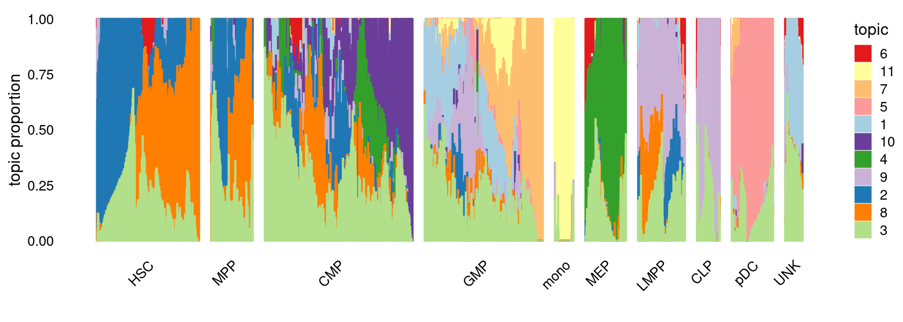
set.seed(10)
colors_topics <- c("#a6cee3","#1f78b4","#b2df8a","#33a02c","#fb9a99","#e31a1c",
"#fdbf6f","#ff7f00","#cab2d6","#6a3d9a","#ffff99","#b15928",
"gray")
myeloid_samples <- factor(samples$label, levels = c("HSC", "MPP", "CMP", "GMP", "mono"))
p.structure.myeloid <- structure_plot(fit,
grouping = myeloid_samples, n = Inf,gap = 40,
perplexity = 50, colors = colors_topics,
num_threads = 4,verbose = FALSE)
print(p.structure.myeloid)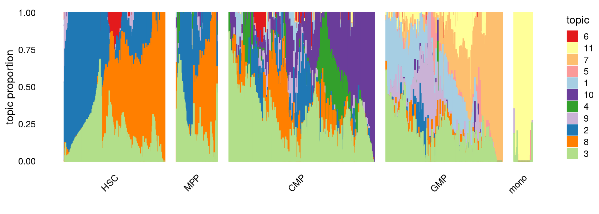
set.seed(10)
colors_topics <- c("#a6cee3","#1f78b4","#b2df8a","#33a02c","#fb9a99","#e31a1c",
"#fdbf6f","#ff7f00","#cab2d6","#6a3d9a","#ffff99","#b15928",
"gray")
myeloid_samples <- factor(samples$label, levels = c("HSC", "MPP", "CMP", "MEP"))
p.structure.erythroid <- structure_plot(fit,
grouping = myeloid_samples, n = Inf,gap = 40,
perplexity = 50,colors = colors_topics,
num_threads = 4,verbose = FALSE)
print(p.structure.erythroid)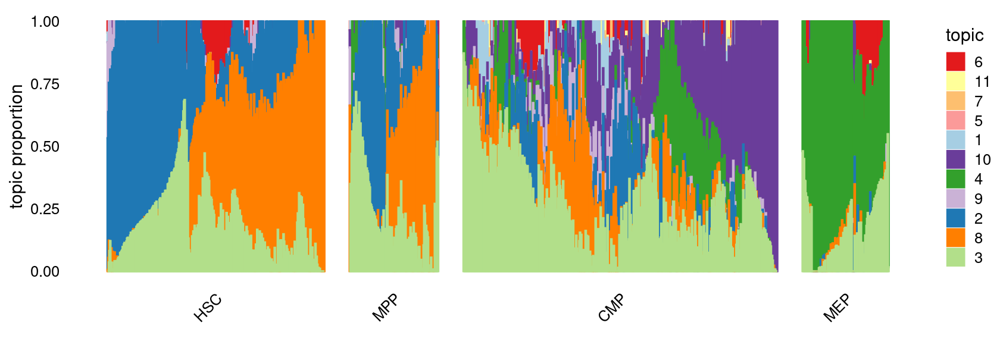
set.seed(10)
colors_topics <- c("#a6cee3","#1f78b4","#b2df8a","#33a02c","#fb9a99","#e31a1c",
"#fdbf6f","#ff7f00","#cab2d6","#6a3d9a","#ffff99","#b15928",
"gray")
myeloid_samples <- factor(samples$label, levels = c("HSC", "MPP", "LMPP", "CLP"))
p.structure.lymphoid <- structure_plot(fit,
grouping = myeloid_samples, n = Inf,gap = 40,
perplexity = 50,colors = colors_topics,
num_threads = 4,verbose = FALSE)
print(p.structure.lymphoid)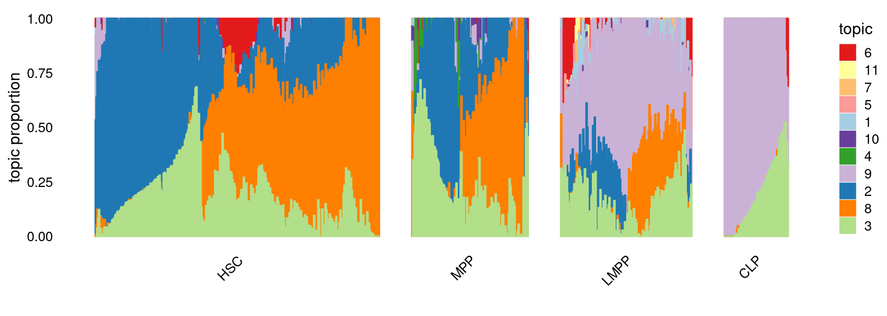
Load results from differential accessbility analysis for the topics
out.dir <- "/project2/mstephens/kevinluo/scATACseq-topics/output/Buenrostro_2018_Chen2019pipeline/binarized/postfit_v2"
cat(sprintf("Load results from %s \n", out.dir))
DA_res <- readRDS(file.path(out.dir, paste0("DAanalysis-Buenrostro2018-k=11-quantile/DA_regions_topics_10000iters.rds")))# Load results from /project2/mstephens/kevinluo/scATACseq-topics/output/Buenrostro_2018_Chen2019pipeline/binarized/postfit_v2Volcano plot of the regions
topic 1 and topic 4 examples
p.volcano.1 <- volcano_plot(DA_res,k = 1, labels = rep("",nrow(DA_res$z)))
p.volcano.4 <- volcano_plot(DA_res,k = 4, labels = rep("",nrow(DA_res$z)))
plot_grid(p.volcano.1, p.volcano.4)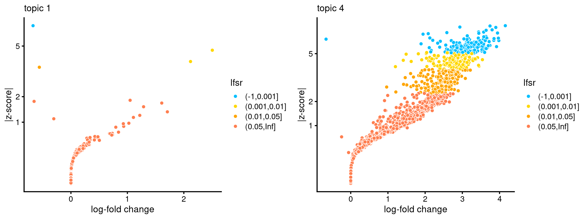
Compile Homer results across topics
homer.dir <- paste0(out.dir, "/motifanalysis-Buenrostro2018-k=11-quantile/HOMER/")
cat(sprintf("Directory of motif analysis result: %s \n", homer.dir))
homer_res_topics <- readRDS(file.path(homer.dir, "/homer_knownResults.rds"))
selected_regions <- readRDS(file.path(homer.dir, "/selected_regions.rds"))
# Compile Homer results (pvalue and ranking) across topics
motif_res <- compile_homer_motif_res(homer_res_topics)
saveRDS(motif_res, paste0(homer.dir, "/homer_motif_enrichment_results.rds"))
cat("compiled homer motif results are saved in", paste0(homer.dir, "/homer_motif_enrichment_results.rds \n"))
motif_table <- data.frame(motif = gsub("/.*", "", rownames(motif_res$mlog10P)),
round(motif_res$mlog10P,2))
DT::datatable(motif_table, rownames = F, caption = "Motif enrichment (-log10P)")# Directory of motif analysis result: /project2/mstephens/kevinluo/scATACseq-topics/output/Buenrostro_2018_Chen2019pipeline/binarized/postfit_v2/motifanalysis-Buenrostro2018-k=11-quantile/HOMER/
# compiled homer motif results are saved in /project2/mstephens/kevinluo/scATACseq-topics/output/Buenrostro_2018_Chen2019pipeline/binarized/postfit_v2/motifanalysis-Buenrostro2018-k=11-quantile/HOMER//homer_motif_enrichment_results.rdscat("Number of regions selected for each topic: \n")
print(mapply(nrow, selected_regions[1:(length(selected_regions)-1)]))
colnames_homer <- c("motif_name", "consensus", "P", "log10P", "Padj", "num_target", "percent_target", "num_bg", "percent_bg")
top_motifs <- data.frame(matrix(nrow=10, ncol = length(homer_res_topics)))
colnames(top_motifs) <- names(homer_res_topics)
for (k in 1:length(homer_res_topics)){
homer_res <- homer_res_topics[[k]]
colnames(homer_res) <- colnames_homer
homer_res <- homer_res %>% separate(motif_name, c("motif", "origin", "database"), "/")
top_motifs[,k] <- head(homer_res$motif, 10)
}
DT::datatable(data.frame(rank = 1:10, top_motifs), rownames = F, caption = "Top 10 motifs enriched in each topic.")# Number of regions selected for each topic:
# k1 k2 k3 k4 k5 k6 k7 k8 k9 k10 k11
# 1012 1012 1012 1012 1012 1012 1012 1012 1012 1012 1012Heatmap of motif enrichment -log10(p-value).
create_motif_enrichment_heatmap(motif_res, enrichment = "-log10(p-value)",
cluster_motifs = TRUE, cluster_topics = TRUE, motif_filter = 10, horizontal = FALSE,
enrichment_range = c(0,100), method_cluster = "average", font.size.motifs = 4, font.size.topics = 9)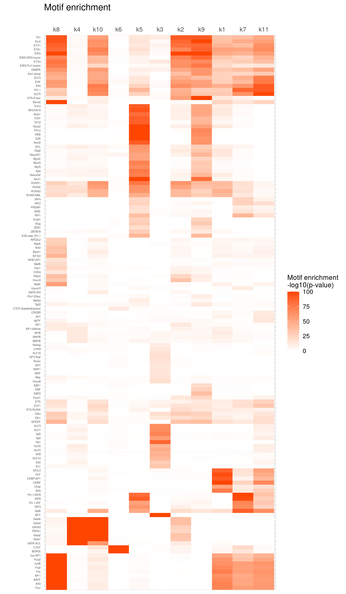
# 137 out of 439 motifs included the heatmap# Heatmap of motif enrichment z-score.
create_motif_enrichment_heatmap(motif_res, enrichment = "z-score",
cluster_motifs = TRUE, cluster_topics = FALSE, motif_filter = 10, horizontal = FALSE,
enrichment_range = c(-20,20), method_cluster = "average", font.size.motifs = 4, font.size.topics = 9)toMatch <- c("^GATA\\d*$", "^CEBP.?$", "^SPI.?$", "^IRF\\d*$", "^STAT\\d*$", "^TCF\\d*$", "^BCL\\d*$", "^CTCF$", "^ERG$")
selected_motifs <- grep(paste(toMatch,collapse="|"), motif_res$motifs$motif, ignore.case = T, value = T)
rows <- match(selected_motifs, motif_res$motifs$motif)
selected_motif_res <- lapply(motif_res, FUN = function(x) {x[rows, ]})Heatmap of motif enrichment -log10(p-value). Order motifs by hierarchical clustering.
create_motif_enrichment_heatmap(selected_motif_res, enrichment = "-log10(p-value)",
cluster_motifs = TRUE, cluster_topics = TRUE, motif_filter = 10, horizontal = FALSE,
enrichment_range = c(0,100), method_cluster = "average", font.size.motifs = 8, font.size.topics = 9)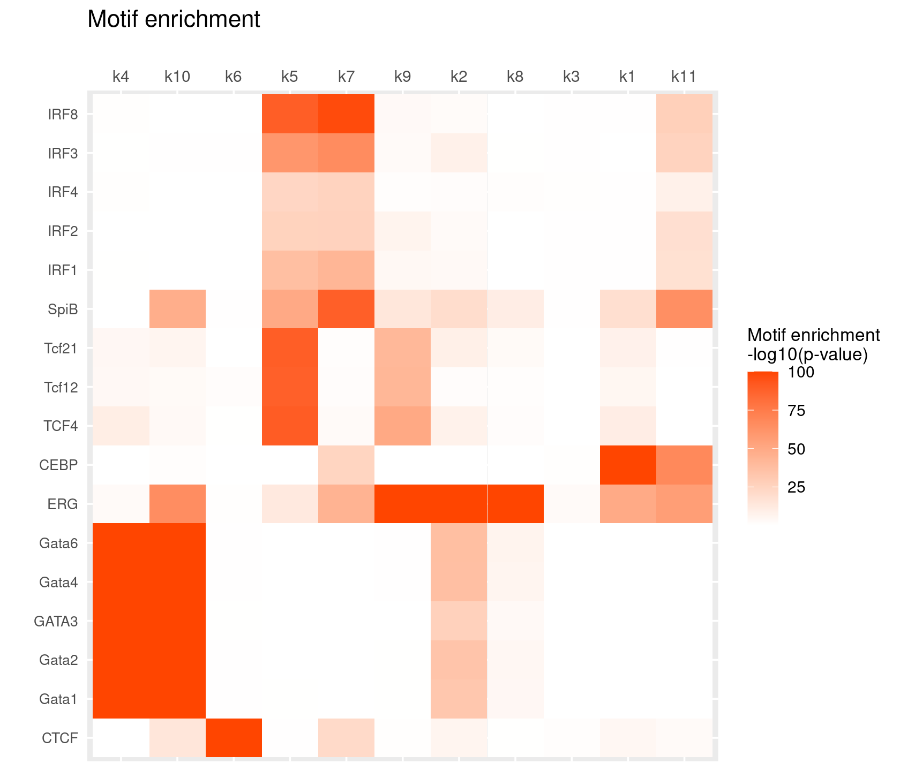
# 17 out of 26 motifs included the heatmapPlot motif enrichment (-log10 p-value) and the ranking
# Plot enrichment (-log10 p-value) and ranking of the motifs
plots <- vector("list", ncol(motif_res$mlog10P))
names(plots) <- colnames(motif_res$mlog10P)
for( i in 1:length(plots)){
plots[[i]] <- create_motif_enrichment_ranking_plot(motif_res, k = i,
max.overlaps = 20, subsample = FALSE)
}
do.call(plot_grid,plots)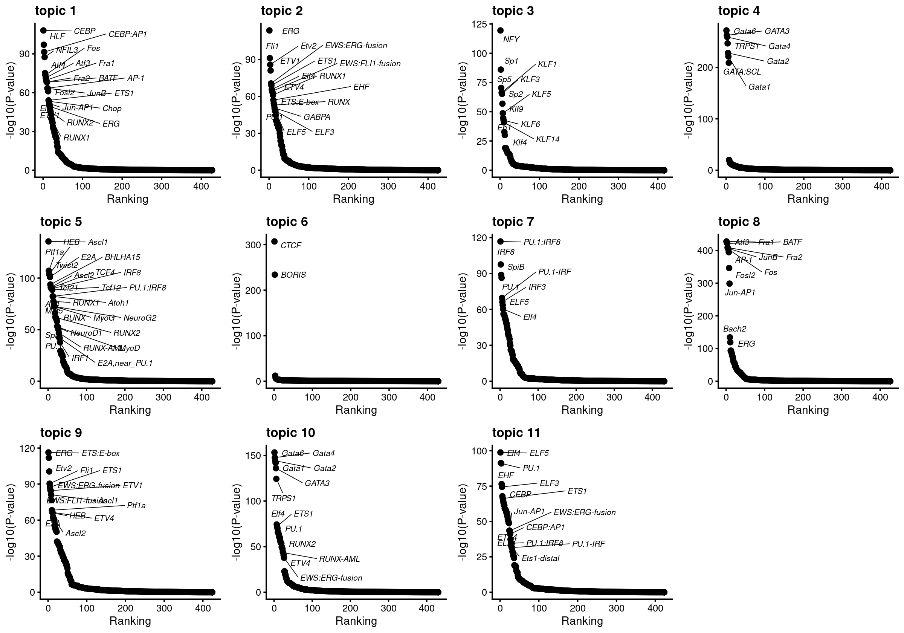
Examples Topic 1 is mainly shown in GMP. The enrichment of CEBP motif in GMP is also highlighted in Figure 2F of the Buenrostro et al paper.
Topic 4 is mainly shown in MEP especially and also CMP. The enrichment of GATA motif in MEP and CMP is also highlighted in Figure 2E of the Buenrostro et al paper.
do.call(plot_grid,plots[c(1,4)])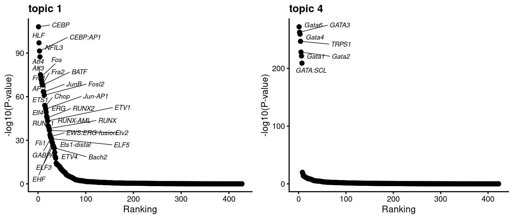
# Plot motif enrichment (-log10 p-value) in each topic vs other topics
plots <- vector("list", ncol(motif_res$mlog10P))
names(plots) <- colnames(motif_res$mlog10P)
for( i in 1:length(homer_res_topics)){
plots[[i]] <- create_motif_enrichment_plot(motif_res, k = i,
max.overlaps = 20, subsample = TRUE)
}
do.call(plot_grid,plots)Load pre-computed gene scores
Gene scores were computed using TSS based method as in Lareau et al Nature Biotech, 2019 as well as the model 21 in archR paper. This model weights chromatin accessibility around gene promoters by using bi-directional exponential decays from the TSS.
gene.dir <- paste0(out.dir, "/geneanalysis-Buenrostro2018-k=11-TSS-absZ-l2")
cat(sprintf("Directory of gene analysis result: %s \n", gene.dir))
genescore_res <- readRDS(file.path(gene.dir, "genescore_result.rds"))# Directory of gene analysis result: /project2/mstephens/kevinluo/scATACseq-topics/output/Buenrostro_2018_Chen2019pipeline/binarized/postfit_v2/geneanalysis-Buenrostro2018-k=11-TSS-absZ-l2Get TF genes
motif_names <- motif_res$motifs$motif
gene_names <- genescore_res$genes$SYMBOL
common_genes <- intersect(toupper(motif_names), toupper(gene_names))
cat(sprintf("%s TF genes mapped between motif names and gene symbol. \n", length(common_genes)))
motif_gene_table <- data.frame(motif = motif_names[match(common_genes, toupper(motif_names))],
gene = gene_names[match(common_genes, toupper(gene_names))])# 263 TF genes mapped between motif names and gene symbol.Compute correlation between motif enrichment z-score and gene score:
Topic 4 example
motif_gene_mapping <- create_motif_gene_cor_scatterplot(motif_res, genescore_res, motif_gene_table,
k = 4, cor.motif = "z-score")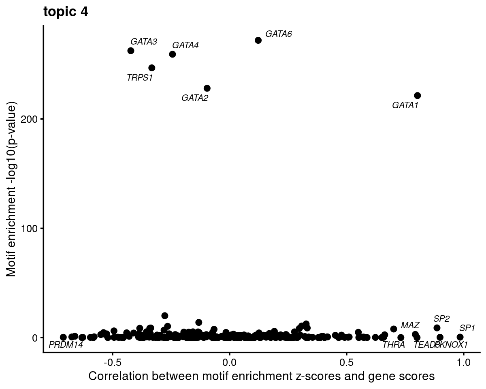
motif_gene_mapping <- motif_gene_mapping[with(motif_gene_mapping, order(motif_mlog10P*cor_zscore, decreasing = T)),]
rownames(motif_gene_mapping) <- 1:nrow(motif_gene_mapping)
cat("Top 10 motifs by motif enrichment (-log10 p-value) and correlation to gene scores: \n")
print(head(motif_gene_mapping[,c("motif","motif_mlog10P", "gene_score", "cor_zscore")], 10))# Top 10 motifs by motif enrichment (-log10 p-value) and correlation to gene scores:
# motif motif_mlog10P gene_score cor_zscore
# 1 Gata1(Zf) 221.490186 0.093355787 0.8026633
# 2 Gata6(Zf) 272.042063 0.014304687 0.1222153
# 3 Sp2(Zf) 8.846579 0.009008670 0.8859293
# 4 Klf4(Zf) 7.808615 0.018467354 0.7009582
# 5 MYB(HTH) 12.451223 0.033500629 0.3270266
# 6 KLF6(Zf) 10.540327 0.007717778 0.3080052
# 7 Twist2(bHLH) 8.764063 0.002548089 0.3316900
# 8 KLF3(Zf) 4.798954 0.046606706 0.5499308
# 9 KLF1(Zf) 8.277653 0.292057556 0.2978747
# 10 Maz(Zf) 2.858961 0.003280518 0.7933922GATA family
motif_names <- motif_res$motifs$motif
gene_names <- genescore_res$genes$SYMBOL
TF_motifs <- sort(unique(grep("^GATA\\d*$", motif_names, ignore.case=T, value=T)))
TF_genes <- sort(unique(grep("^GATA\\d*$", gene_names, ignore.case=T, value=T)))
common_genes <- intersect(toupper(TF_motifs), toupper(TF_genes))
motif_gene_table <- data.frame(motif = TF_motifs[match(common_genes, toupper(TF_motifs))],
gene = TF_genes[match(common_genes, toupper(TF_genes))])
print(motif_gene_table)# motif gene
# 1 Gata1 GATA1
# 2 Gata2 GATA2
# 3 GATA3 GATA3
# 4 Gata4 GATA4
# 5 Gata6 GATA6# Plot GATA motifs in topic 4
k = 4
motif_order <- order(motif_res$mlog10P[,k], decreasing = T)
motifs <- rownames(motif_res$motifs[motif_order,])
motif_names <- motif_res$motifs[motif_order, "motif"]
selected_motifs <- unique(motifs[match(toupper(motif_gene_table$motif), toupper(motif_names))])
motif.dir <- paste0(homer.dir, "/homer_result_topic_", k, "/knownResults/")
for (i in 1:length(selected_motifs)){
plot_motif_logo(homer_res_topics, selected_motifs[i], k, motif.dir, type = "both")
}plots <- create_motif_gene_scatterplot(motif_res, genescore_res,
motif_gene_table,
k = 4,
y = "-log10(p-value)",
colors = colors_topics,
max.overlaps = 10)
do.call(plot_grid,plots)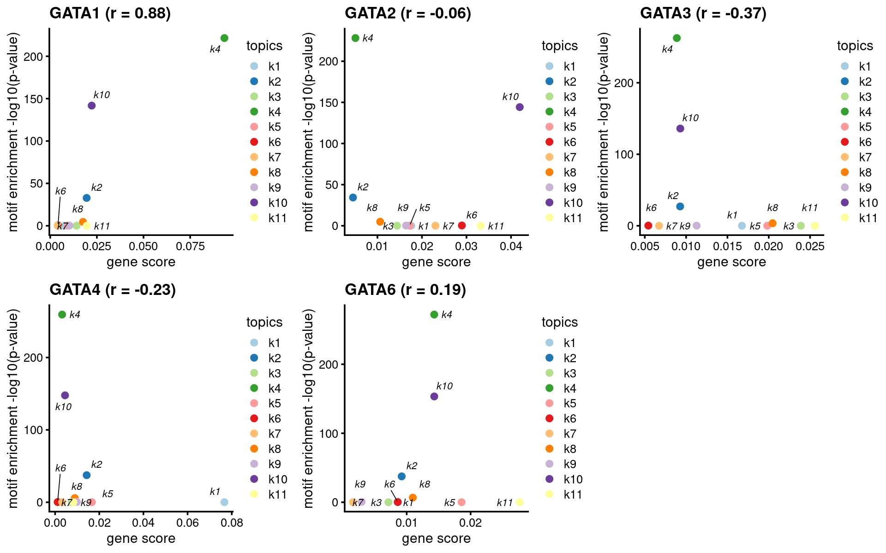
plots <- create_motif_gene_scatterplot(motif_res, genescore_res,
motif_gene_table,
k = 4,
y = "z-score",
colors = colors_topics,
max.overlaps = 10)
do.call(plot_grid,plots)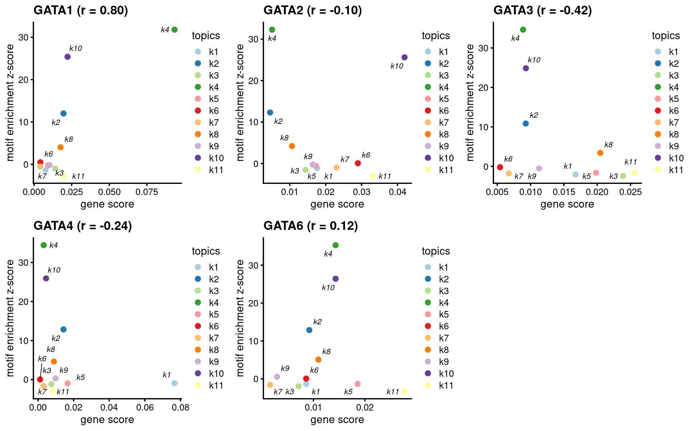
CEBP family
motif_names <- motif_res$motifs$motif
gene_names <- genescore_res$genes$SYMBOL
TF_motifs <- sort(unique(grep("^CEBP.?$", motif_names, ignore.case=T, value=T)))
TF_genes <- sort(unique(grep("^CEBP.?$", gene_names, ignore.case=T, value=T)))
motif_gene_table <- unique(data.frame(motif = c("CEBP"), gene = TF_genes))
print(motif_gene_table)# motif gene
# 1 CEBP CEBPA
# 2 CEBP CEBPB
# 3 CEBP CEBPD
# 4 CEBP CEBPE
# 5 CEBP CEBPG
# 6 CEBP CEBPZ# Plot GATA motifs in topic 4
k = 1
motif_order <- order(motif_res$mlog10P[,k], decreasing = T)
motifs <- rownames(motif_res$motifs[motif_order,])
motif_names <- motif_res$motifs[motif_order, "motif"]
selected_motifs <- unique(motifs[match(toupper(motif_gene_table$motif), toupper(motif_names))])
motif.dir <- paste0(homer.dir, "/homer_result_topic_", k, "/knownResults/")
for (i in 1:length(selected_motifs)){
plot_motif_logo(homer_res_topics, selected_motifs[i], k, motif.dir, type = "both")
}plots <- create_motif_gene_scatterplot(motif_res, genescore_res,
motif_gene_table,
k = 1,
y = "-log10(p-value)",
colors = colors_topics,
max.overlaps = 10)
do.call(plot_grid,plots)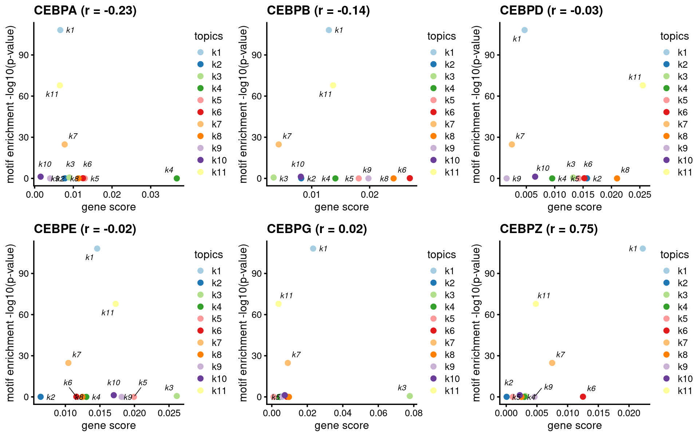
plots <- create_motif_gene_scatterplot(motif_res, genescore_res,
motif_gene_table,
k = 1,
y = "z-score",
colors = colors_topics,
max.overlaps = 10)
do.call(plot_grid,plots)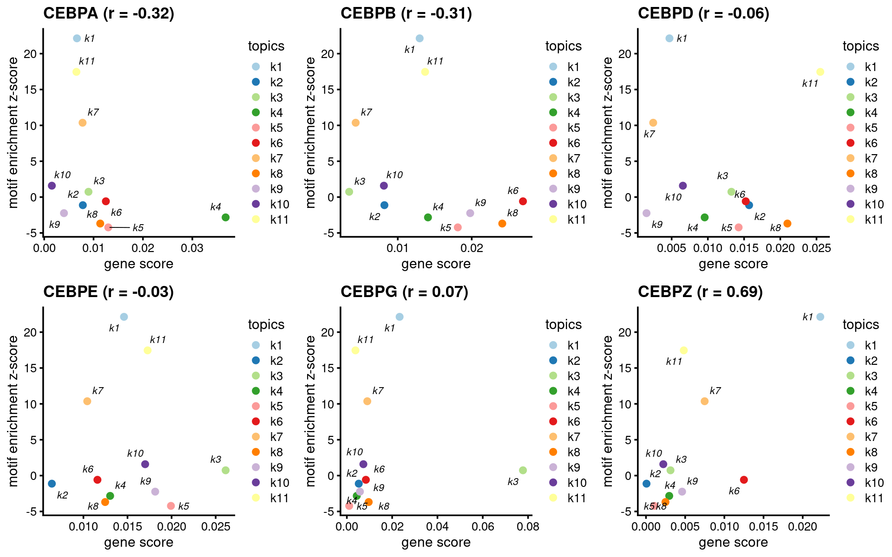
sessionInfo()# R version 4.0.4 (2021-02-15)
# Platform: x86_64-pc-linux-gnu (64-bit)
# Running under: Scientific Linux 7.4 (Nitrogen)
#
# Matrix products: default
# BLAS/LAPACK: /software/openblas-0.3.13-el7-x86_64/lib/libopenblas_haswellp-r0.3.13.so
#
# locale:
# [1] LC_CTYPE=en_US.UTF-8 LC_NUMERIC=C
# [3] LC_TIME=en_US.UTF-8 LC_COLLATE=en_US.UTF-8
# [5] LC_MONETARY=en_US.UTF-8 LC_MESSAGES=en_US.UTF-8
# [7] LC_PAPER=en_US.UTF-8 LC_NAME=C
# [9] LC_ADDRESS=C LC_TELEPHONE=C
# [11] LC_MEASUREMENT=en_US.UTF-8 LC_IDENTIFICATION=C
#
# attached base packages:
# [1] grid stats graphics grDevices utils datasets methods
# [8] base
#
# other attached packages:
# [1] Logolas_1.3.1 reshape2_1.4.4 DT_0.20 htmlwidgets_1.5.4
# [5] plotly_4.10.0 cowplot_1.1.1 ggrepel_0.9.1 ggplot2_3.3.5
# [9] tidyr_1.1.4 dplyr_1.0.7 fastTopics_0.6-97 Matrix_1.4-0
# [13] workflowr_1.7.0
#
# loaded via a namespace (and not attached):
# [1] Rtsne_0.15 colorspace_2.0-2 seqinr_4.2-8
# [4] ellipsis_0.3.2 class_7.3-20 rprojroot_2.0.2
# [7] fs_1.5.2 rstudioapi_0.13 farver_2.1.0
# [10] listenv_0.8.0 MatrixModels_0.5-0 bit64_4.0.5
# [13] prodlim_2019.11.13 fansi_1.0.2 lubridate_1.8.0
# [16] codetools_0.2-18 splines_4.0.4 knitr_1.37
# [19] ade4_1.7-18 jsonlite_1.7.3 pROC_1.18.0
# [22] mcmc_0.9-7 caret_6.0-90 gridBase_0.4-7
# [25] Rmpfr_0.8-7 ashr_2.2-47 uwot_0.1.11
# [28] compiler_4.0.4 httr_1.4.2 assertthat_0.2.1
# [31] fastmap_1.1.0 lazyeval_0.2.2 cli_3.1.1
# [34] later_1.3.0 prettyunits_1.1.1 htmltools_0.5.2
# [37] quantreg_5.86 tools_4.0.4 gmp_0.6-2.1
# [40] coda_0.19-4 gtable_0.3.0 glue_1.6.1
# [43] Rcpp_1.0.8 jquerylib_0.1.4 vctrs_0.3.8
# [46] ape_5.6-1 nlme_3.1-155 conquer_1.2.1
# [49] crosstalk_1.2.0 iterators_1.0.13 timeDate_3043.102
# [52] CVXR_1.0-10 gower_0.2.2 xfun_0.29
# [55] stringr_1.4.0 globals_0.14.0 ps_1.6.0
# [58] lifecycle_1.0.1 irlba_2.3.5 future_1.23.0
# [61] getPass_0.2-2 MASS_7.3-55 scales_1.1.1
# [64] ipred_0.9-12 hms_1.1.1 promises_1.2.0.1
# [67] parallel_4.0.4 SparseM_1.81 yaml_2.2.2
# [70] pbapply_1.5-0 sass_0.4.0 rpart_4.1-15
# [73] stringi_1.7.6 SQUAREM_2021.1 highr_0.9
# [76] foreach_1.5.1 lava_1.6.10 truncnorm_1.0-8
# [79] rlang_1.0.0 pkgconfig_2.0.3 matrixStats_0.61.0
# [82] evaluate_0.14 lattice_0.20-45 invgamma_1.1
# [85] purrr_0.3.4 labeling_0.4.2 recipes_0.1.17
# [88] bit_4.0.4 processx_3.5.2 tidyselect_1.1.1
# [91] parallelly_1.30.0 plyr_1.8.6 magrittr_2.0.2
# [94] R6_2.5.1 generics_0.1.1 DBI_1.1.2
# [97] pillar_1.6.5 whisker_0.4 withr_2.4.3
# [100] survival_3.2-13 mixsqp_0.3-43 nnet_7.3-17
# [103] tibble_3.1.6 future.apply_1.8.1 crayon_1.4.2
# [106] utf8_1.2.2 rmarkdown_2.11 progress_1.2.2
# [109] data.table_1.14.2 callr_3.7.0 git2r_0.29.0
# [112] ModelMetrics_1.2.2.2 digest_0.6.29 httpuv_1.6.5
# [115] MCMCpack_1.6-0 RcppParallel_5.1.5 stats4_4.0.4
# [118] munsell_0.5.0 viridisLite_0.4.0 bslib_0.3.1
# [121] quadprog_1.5-8